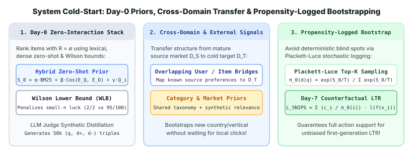

4. System & New-Market Cold-Start: Zero-Interaction Bootstrapping, Cross-Domain Transfer & LLM Synthetic Judges
The hardest cold-start regime is System Cold-Start (also called New-Market or Day-0 Cold-Start): launching a brand-new product, marketplace, or regional vertical when the interaction matrix is completely empty ($R = \emptyset$)—neither users nor items have any click history. Worse still, how you rank items on Day 0 determines which items get seen, which directly biases the training logs you collect for your Day-7 Learning-to-Rank (LTR) model! This chapter covers the complete four-pillar playbook for System Cold-Start: (1) Day-0 Calibrated Hybrid Scoring & Wilson Lower Bounds, (2) Cross-Domain & Cross-Market Transfer Learning (EMCDR / PTUPCDR), (3) LLM-as-a-Judge Synthetic Relevance Distillation, and (4) Plackett–Luce Propensity-Logged Stochastic Ranking for unbiased Day-7 policy upgrades.

1. Day-0 Zero-Interaction Scoring & Wilson Lower Bound Priors
On Day 0 ($R = \emptyset$), a search or recommendation service cannot train a collaborative filtering model or a click-through-rate (CTR) GBDT. Instead, we construct a Zero-Shot Calibrated Prior Score $S_0(q, d)$ combining z-score standardized lexical matching (BM25), pretrained off-the-shelf dense bi-encoder cosine similarity (e.g., BGE / E5 / CLIP), intrinsic item quality completeness $Q(d)$ (image resolution, description completeness, seller rating), and a confidence-penalized popularity term:
Why use the Wilson Lower Bound ($\text{WLB}$) (Wilson, 1927) as the popularity/rating signal during the first week of traffic instead of raw CTR $\hat{p} = s_d / n_d$ or Laplace smoothing? Because on Day 1, an item with $2$ clicks out of $2$ impressions ($\hat{p} = 100\%$) would outrank a proven item with $95$ clicks out of $100$ impressions ($\hat{p} = 95\%$). Solving for the lower bound of the exact Binomial confidence interval at level $z = z_{1-\alpha/2}$ (e.g., $z = 1.96$ for $95\%$ confidence) yields:
At $n_d = 0$, $\text{WLB}(0, 0) = 0$; at $s_d = 2, n_d = 2$ ($100\%$ raw CTR), $\text{WLB}(2, 2) = \mathbf{34.2\%}$, whereas at $s_d = 95, n_d = 100$ ($95\%$ raw CTR), $\text{WLB}(95, 100) = \mathbf{88.8\%}$!
2. Cross-Domain & Cross-Market Transfer Learning (EMCDR & PTUPCDR)
Often a company is not launching its very first product, but expanding into a new vertical or country: e.g., Uber Eats launching Grocery delivery, Amazon launching in a new country, or Spotify launching Audiobooks. Here, a mature source domain $\mathcal{D}_S$ has rich interaction logs $R_S$, while the target domain $\mathcal{D}_T$ is cold.
- Embedding and Mapping Cross-Domain Recommendation (EMCDR, Man et al., IJCAI 2017): Using the subset of overlapping "bridge" users $\mathcal{U}_{\text{bridge}} = \mathcal{U}_S \cap \mathcal{U}_T$, EMCDR learns a non-linear mapping $f_{\text{bridge}}: \mathbb{R}^{d_S} \to \mathbb{R}^{d_T}$ between the source latent space and target latent space.
- Personalized Transfer of User Preferences (PTUPCDR, Zhu et al., WSDM 2022): A single global mapping $f_{\text{bridge}}$ assumes all users shift their preferences identically across domains. PTUPCDR uses a Meta-Network $g_\psi(\mathbf{c}_u)$ conditioned on the user's source behavioral profile $\mathbf{c}_u$ to generate a personalized bridge matrix $\mathbf{W}_u = g_\psi(\mathbf{c}_u) \in \mathbb{R}^{d_T \times d_S}$, plus a Maximum Mean Discrepancy ($\text{MMD}$) regularizer when user overlap is zero (country-to-country transfer):
$$\hat{\mathbf{u}}_T = \mathbf{W}_u\,\mathbf{u}_S, \qquad \mathcal{L}_{\text{CD}} = \sum_{u \in \mathcal{U}_{\text{bridge}}} \big\|\mathbf{W}_u\,\mathbf{u}_S - \mathbf{u}_T\big\|_2^2 + \lambda_{\text{MMD}}\,\big\|\boldsymbol{\mu}(\mathcal{Z}_S) - \boldsymbol{\mu}(\mathcal{Z}_T)\big\|_{\mathcal{H}}^2$$
3. LLM-as-a-Judge Synthetic Relevance Distillation
Before real users generate enough clicks to fine-tune a domain-specific Two-Tower bi-encoder or L1 GBDT ranker, we can synthesize a high-coverage training set $\mathcal{D}_{\text{syn}} = \{(q_k, d_k^+, d_k^-, y_k^{\text{LLM}})\}_{k=1}^M$:
- Query Generation (Inpars / Promptagator): Sample catalog documents $d \in \mathcal{C}$ and prompt an LLM to generate realistic tail, torso, and head user queries $q \sim P_{\text{LLM}}(q \mid d)$.
- Hard Negative Retrieval + Pointwise/Pairwise LLM Grading: Retrieve top-20 candidates via BM25 + off-the-shelf dense embeddings, then use a rubric-calibrated LLM Judge (0 = Irrelevant, 1 = Related, 2 = Partial Match, 3 = Exact Match) to produce soft Margin-MSE distillation targets for the Day-0 student ranker.
4. Propensity-Instrumented Stochastic Logging for Unbiased Day-7 LTR
If your Day-0 ranker deterministically sorts by $S_0(q, d)$ and only displays the top $K = 10$ items, then every item ranked at position $\ge 11$ by the heuristic receives zero impressions ($\pi_0(d \mid q) = 0$). When you train your first Learning-to-Rank model on Day 7, it is blind to those items (selection bias deadlock).
To guarantee full support ($\pi_0(d \mid q) > 0$) while preserving Day-0 user experience, production systems sample the displayed top-$K$ slate sequentially without replacement from a temperature-controlled Plackett–Luce distribution over the top-$M$ ($M \approx 50$) candidates and log the exact inclusion propensity $\pi_0(d_i \mid q)$ alongside every impression:
5. Worked Numerical Example: Day-1 Ranking with Wilson Lower Bound & Plackett–Luce Logging
Compare 4 items in a newly launched marketplace using $95\%$ Wilson Lower Bound ($z = 1.96$, $z^2 = 3.8416$) and Plackett–Luce logging probabilities at temperature $T_{\text{log}} = 0.15$:
| Catalog Item $d_i$ | Views $n_i$ & Clicks $s_i$ | Raw CTR $\hat{p}_i = s_i / n_i$ | Laplace $(s_i+1)/(n_i+2)$ | 95% Wilson Lower Bound $\text{WLB}_i$ | Plackett–Luce $\pi_0(d_i)$ ($T=0.15$) |
|---|---|---|---|---|---|
| Item A (Lucky fluke)Only 2 views so far | $n_A = 2,\; s_A = 2$ | $100.0\%$ (Rank 1) | $75.0\%$ | $34.24\%$ (Rank 3) | $11.9\%$ |
| Item B (Strong Seller)Consistent conversion | $n_B = 100,\; s_B = 48$ | $48.0\%$ (Rank 3) | $48.0\%$ | $38.46\%$ (Rank 1) | $52.8\%$ |
| Item C (Moderate Seller)Small sample size | $n_C = 10,\; s_C = 6$ | $60.0\%$ (Rank 2) | $58.3\%$ | $31.27\%$ (Rank 4) | $7.5\%$ |
| Item D (Solid Runner-Up)Medium sample size | $n_D = 50,\; s_D = 25$ | $50.0\%$ | $50.0\%$ | $36.64\%$ (Rank 2) | $27.8\%$ |
Notice two critical properties: (1) Raw CTR and Laplace smoothing both get fooled by Item A ($2/2 = 100\%$), whereas the $95\%$ Wilson Lower Bound correctly ranks Item B ($48/100$, $\text{WLB} = 38.46\%$) #1 and Item D ($25/50$, $\text{WLB} = 36.64\%$) #2; (2) Plackett–Luce logging still gives Items A and C $11.9\%$ and $7.5\%$ slot-1 exposure so they can gather the impressions needed to shrink their confidence intervals!
6. PyTorch Implementation: Wilson Lower Bound, Plackett–Luce Logger & PTUPCDR Bridge
import torch
import torch.nn as nn
import torch.nn.functional as F
class SystemColdStartToolkit(nn.Module):
"""
Implements:
1. Exact Wilson Lower Bound (WLB) score for small-sample Day-0/Day-1 items
2. Personalized Cross-Domain Bridge Meta-Network (PTUPCDR)
3. Plackett-Luce stochastic slate sampling with logged propensities for IPS/SNIPS
"""
def __init__(self, d_source: int = 32, d_target: int = 32):
super().__init__()
self.d_source = d_source
self.d_target = d_target
# Meta-network generates a personalized bridge matrix W_u in R^{d_target x d_source}
self.meta_bridge = nn.Sequential(
nn.Linear(d_source, 64),
nn.GELU(),
nn.Linear(64, d_target * d_source),
)
@staticmethod
def wilson_lower_bound(clicks: torch.Tensor, views: torch.Tensor, z: float = 1.96) -> torch.Tensor:
safe_n = torch.clamp(views, min=1.0)
p_hat = clicks / safe_n
z2 = z * z
denom = 1.0 + z2 / safe_n
center = p_hat + z2 / (2.0 * safe_n)
rad = z * torch.sqrt((p_hat * (1.0 - p_hat) + z2 / (4.0 * safe_n)) / safe_n)
wlb = (center - rad) / denom
return torch.where(views > 0, wlb, torch.zeros_like(wlb))
def transfer_user(self, u_source: torch.Tensor) -> torch.Tensor:
B = u_source.size(0)
W_u = self.meta_bridge(u_source).view(B, self.d_target, self.d_source)
u_target = torch.bmm(W_u, u_source.unsqueeze(-1)).squeeze(-1)
return F.normalize(u_target, dim=-1)
@staticmethod
def plackett_luce_sample_with_propensity(
scores: torch.Tensor, k: int = 3, temperature: float = 0.15
) -> tuple[torch.Tensor, torch.Tensor]:
# Compute slot-1 inclusion propensities and sample a top-k ranking without replacement
probs = F.softmax(scores / temperature, dim=-1)
# Gumbel-Top-k trick for exact Plackett-Luce sampling without replacement
gumbels = -torch.empty_like(scores).exponential_().log()
perturbed = (scores / temperature) + gumbels
topk_indices = torch.topk(perturbed, k=k, dim=-1).indices
logged_propensities = torch.gather(probs, dim=-1, index=topk_indices)
return topk_indices, logged_propensities
# Verify on the 4-item worked example
views = torch.tensor([2.0, 100.0, 10.0, 50.0])
clicks = torch.tensor([2.0, 48.0, 6.0, 25.0])
wlb = SystemColdStartToolkit.wilson_lower_bound(clicks, views)
print("95% WLB (%):", [round(x * 100, 2) for x in wlb.tolist()])